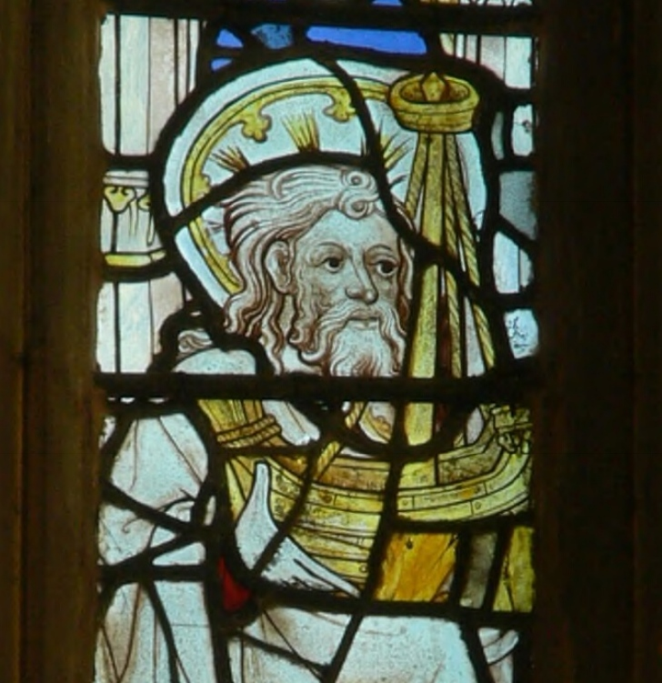
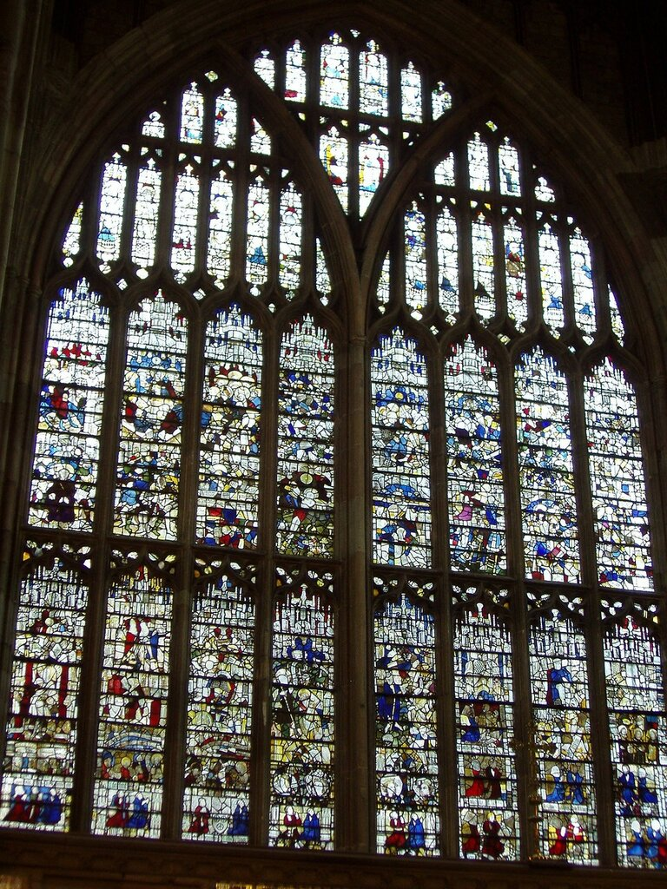
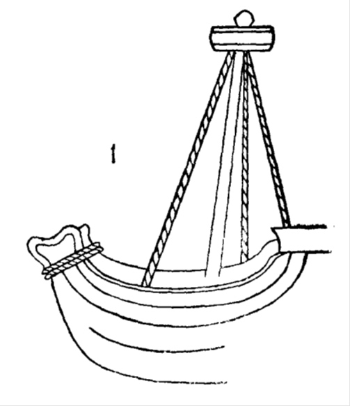
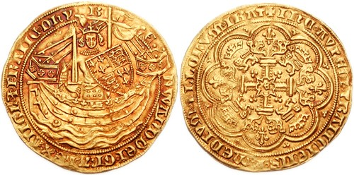
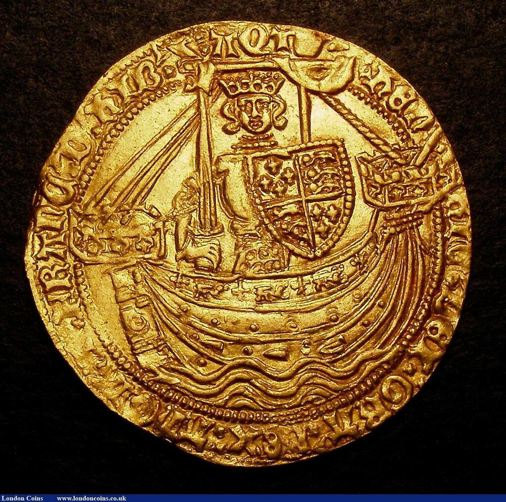
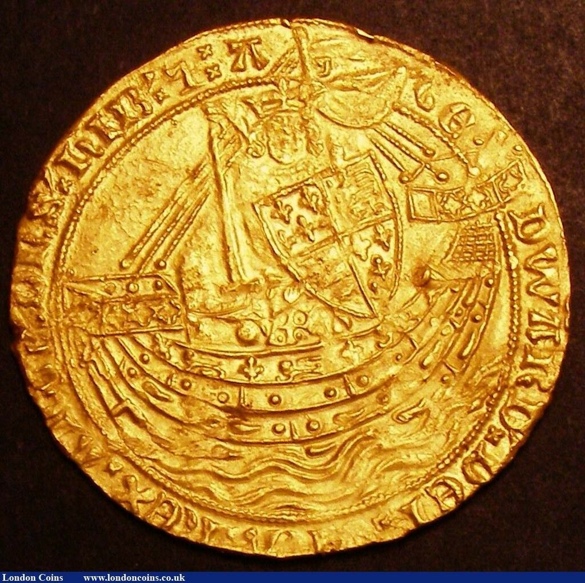

Корабль святого Иуды
Ну-ка, философ, разреши мне эту задачу.
Тургенев. Накануне
Загадка-то глупая, отгадывать нечего. Пошевели мозгами - поймешь.
Достоевский. Братья Карамазовы
В английском городке Молверн (графство Вустершир) находится бывший монастырь бенедиктинцев, а ныне англиканская приходская церковь (Great Malvern Priory, Great Malvern, Worcestershire, England) с витражными окнами XV века. Особо примечательно восточное окно, которое считают едва ли не самым большим витражным окном в Англии. В третьем сверху ряду витражей, где представлены изображения 12 апостолов, наше внимание привлекает одно из них, четвертое, если считать с юга. Это изображение святого Иуды («Иуда, не Искариот», как называл его Иоанн в своем Евангелии; он известен также под именами Иуда Иаковлев или Фаддей).

Святой Иуда, фрагмент витража восточного окна в приорстве Молверна, Вустершир, Англия. Датировка витража между 1440 и 1460 гг. Фото Cowen.
Нас заинтересовала модель корабля, которая находится в руках у этого апостола. Это одномачтовое судно с высоким бортом, изображенное в традициях художников той эпохи.
Детали этого корабля с земли рассмотреть непросто, окно действительно поражает своими размерами

Восточное окно приорства Молверн.
Но благодаря современной оптике мы можем изучить изображение во всех его деталях. Этих деталей немного и вряд ли они заслуживают особого внимания, за исключением одной вещи, назначение которой совершенно непонятно: вокруг верхней части форштевня наложены два шлага достаточно толстого троса.

Прорисовка корабля св. Иуды. H. H. Brindley (1911).
От витков троса на модели не исходит никакого дополнительного конца, чтобы можно было считать его частью носового швартового устройства. Положение этого гаджета также исключает его применение в качестве кранца. Служил ли он для придания дополнительной прочности доскам обшивки в самом слабом месте конструкции? Или для каких-то других целей, которые диктовались особенностями конструкции корабля? Или это всего лишь условное изображение, которое было принято среди художников той эпохи?
Задавшись этими вопросами, просмотрим на другие изображения кораблей XIV-XV вв. Первое, что мы отметим, что изображения тросовых шлагов на носовой части кораблей встречается в основном у английских художников. И одно из первых мы встречаем на известной английской золотой монете - нобле (noble) – короля Эдуарда III, впервые отчеканенной в 1344 году в память о победе над французами в морском сражении при Слёйсе (1340). На аверсе нобля изображался погрудный портрет короля с мечом и щитом на корабле на волнах моря, на реверсе — инициалы короля или название монетного двора в разорванной середине лилиевидного креста в восьмидужном оформлении.

В верхней части форштевня корабля четко видны те же два тросовых шлага.
На других выпусках ноблей число шлагов может равняться трем, как на этом нобле Генриха IV

или даже больше, как на этом нобле Эдуарда III; впрочем, в данном случае трудно понять, идеем ли мы дело с тросом, прядей не разглядеть

Монета имела широкое хождение в разных странах, кроме, естественно, Франции. Но даже в тех странах, которые использовали в своем денежном обороте английские нобли, мы не встречаем изображений с тросовыми ожерельями вокруг форштевня. То что Франция не использовала традиции своего заклятого противника – понятно, но как быть с такими странами, как Голландия или Фландрия или германские княжества? Так может быть тросовый гаджет был не следствием традиций в изобразительном искусстве, а являлся необходимой частью конструкции корабля, характерной именно для Англии?
Пусть поставленные вопросы будут загадкой до наших следующих постов на эту тему. Впрочем, может быть останутся таковой и после наших попыток разрешить ее.